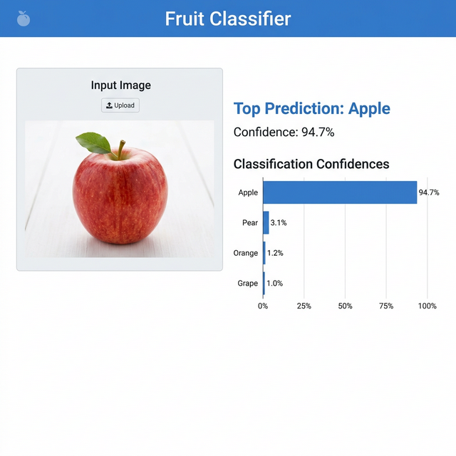
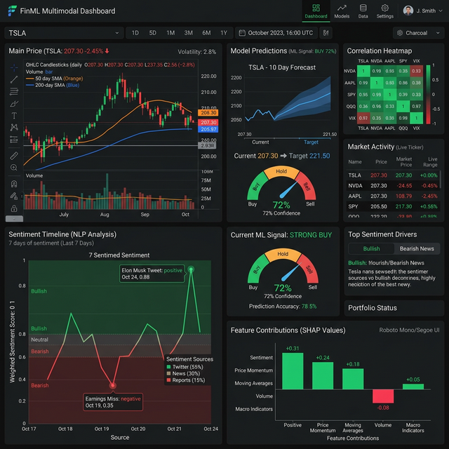

ML Systems and End-to-End Products
Full-pipeline machine learning projects from data collection through deployment.

Multimodal Stock Analysis and Prediction
Multimodal pipeline combining price action features with NLP sentiment for market signal modeling.
Skills: NLP, Computer Vision, Feature Engineering, Pipelines, Backtesting